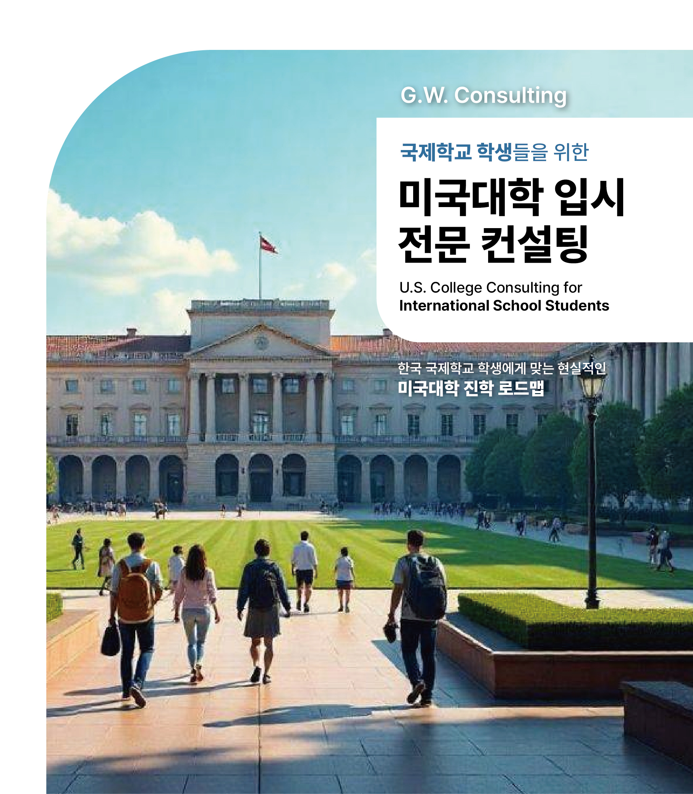

2026년 합격 대학
미국 대학을 목표로 하는 국제 학생들을 위한 종합적이고 개인 맞춤형 지원.
학생의 목표·성적·희망 대학에 맞춘 맞춤형 로드맵과 지원 대학 리스트를 신입생 시기부터 제출일까지 함께 설계합니다.
모든 지원의 기초가 되는 학교 성적을 높이기 위한 체계적인 수업과 개별 지도를 제공합니다.
명확한 목표 점수와 실전 연습을 바탕으로 한 집중 SAT 지도로, 시험이 부담이 아닌 강점이 되도록 합니다.
입학 사정관의 마음을 사로잡는 진솔하고 인상적인 에세이를 1:1로 함께 완성합니다.
Common App, 추가 에세이, 추천서, 마감일 관리까지 체계적이고 부담 없이 도와드립니다.
장학금과 학자금 기회를 찾고, 지원 자격을 극대화하도록 지원합니다. 저희 학생들은 $25만 이상의 장학금을 받았습니다.
미국 입시는 12학년이 아니라 9학년에 시작되는 종합 평가입니다. 각 학년에서 '무엇을·언제' 하는지 명확히 안내합니다.
강한 성적 습관 · 활동 시작 · 4년 로드맵 수립
시험 준비 본격화 · 전공 적합성(Spike) 개발
공식 시험 점수 확정 · 에세이·추천서·대학 리스트
원서 제출 · 합격 관리 · 등록 · 비자 · 출국
9학년은 모든 것이 시작되는 시기입니다. 이때의 성적과 활동 습관은 4년 내내 대학에 제출되는 성적표에 그대로 남습니다. GW Consulting은 학생의 강점을 진단하고 4년 전체를 관통하는 전략적 로드맵을 설계합니다.
학생의 학업 수준·성향·관심사를 종합 진단하고, 가족의 목표와 예산을 함께 확인합니다.
Honors·AP·IB 등 도전적인 과목을 학생 수준에 맞게 설계합니다. (미국 대학은 '쉬운 과목 A'보다 '어려운 과목 B'를 더 높게 평가합니다.)
9학년 GPA가 평생 성적표에 남는 점을 고려해 과목별 목표 학점과 관리 방안을 제시하고 성적을 점검합니다.
학생이 진정으로 즐기는 2~3개의 의미 있는 활동을 찾아 4년간 깊이 발전시킬 방향을 잡습니다.
향후 SAT·TOEFL의 토대가 되는 독서·어휘 습관을 설계합니다.
활동명·역할·시간·성과를 체계적으로 기록하는 시스템을 만들어 드립니다. (12학년 원서 작성 시 결정적 자료)
단순한 휴식이 아닌, 프로파일을 강화하는 의미 있는 여름 활동을 기획합니다.
학생의 진척 상황을 분기마다 학부모님께 보고하고 상담합니다.
10학년은 학생만의 '색깔'을 만들어가는 시기입니다. 표준화 시험 준비를 본격화하고, 남들과 차별화되는 전공 적합성(Spike)을 키웁니다.
학생에게 더 유리한 시험을 진단하고 목표 점수까지의 학습 일정을 설계합니다.
PSAT 응시를 안내하고 결과를 분석해 약점을 보완합니다.
전공 방향과 연계된 심화 과목을 선정합니다.
단순 참여를 넘어 동아리·활동에서 리더 역할을 맡도록 코칭합니다.
학생만의 강력한 한 가지 강점을 깊이 있게 발전시킵니다.
대학 부설 프로그램·연구·인턴십 등 경쟁 프로그램 지원을 돕습니다. (마감 2~3월)
영어 공인 점수 준비를 시작합니다. (목표 TOEFL 100+)
합격 가능성·국제학생 환경·재정 지원을 고려한 예비 리스트를 만듭니다.
국제학생을 위한 메리트 장학금 제공 학교를 함께 조사합니다.
매월 학생 상담, 분기별 학부모 보고를 진행합니다.
11학년은 미국 입시에서 가장 중요한 해입니다. 공식 시험 점수가 확정되고, 에세이와 추천서 준비가 시작되며, 지원할 대학 리스트가 확정됩니다.
응시 일정 관리와 슈퍼스코어(Superscore) 전략으로 최고 점수를 만듭니다.
마감 전까지 목표 점수를 확정합니다.
5월 AP 시험을 대비하고 관리합니다. (4~5점 목표)
도전(Reach)·적정(Match)·안정(Safety)으로 균형 잡힌 최종 리스트를 확정합니다.
방문·온라인 설명회 참여로 대학에 대한 관심(Demonstrated Interest)을 입증합니다.
학생만의 이야기를 발굴해 Common App 에세이(650단어) 주제를 정합니다.
학생을 잘 아는 교사를 선정하고 추천서 요청을 전략적으로 준비합니다.
공통원서 플랫폼을 미리 설정하고 익힙니다.
지원 전공과 향후 진로를 구체화합니다.
월간 상담, 분기별 보고를 진행합니다.
12학년은 4년간의 준비를 결실로 만드는 시기입니다. 모든 원서를 마감 안에 완벽하게 제출하고, 합격 후 등록과 비자 발급, 출국까지 책임지고 관리합니다.
모든 원서 항목을 빠짐없이 점검·관리합니다.
개인 에세이를 여러 차례 첨삭해 완성도를 높입니다. (학생의 목소리를 살리는 지도)
학교별 추가 에세이(Supplemental)를 각 대학 특성에 맞게 지도합니다.
구속력 있는 ED의 의미를 설명하고 최적의 조기 전형 전략을 수립합니다.
마감일별 체크리스트로 누락 없이 제출합니다. (ED/EA 11/1, RD 1/1)
교사·카운슬러 추천서가 제때 제출되도록 조율합니다.
동문·입학사정관 인터뷰를 모의 연습으로 대비합니다.
합격 학교별 실질 비용(Net Cost)을 비교하고 필요 시 재정 지원 협상을 돕습니다.
5월 1일 등록 마감 전 디포짓 납부를 안내합니다.
I-20 발급, SEVIS 비용 납부, F-1 비자 인터뷰까지 안내합니다.
보험·기숙사·오리엔테이션·출국 체크리스트를 점검합니다.
일관된 학년별 관리가 결과를 바꾸는 이유입니다.
학업 성취도, 비교과 활동, 리더십, 에세이, 추천서까지 모두 종합 평가하는 Holistic Admissions입니다. 점수만 높은 학생은 떨어지고, 자기만의 색깔이 뚜렷한 학생이 합격합니다. 저희는 모든 요소를 함께 설계합니다.
미국 대학은 9~12학년 4년간의 성적표 전체를 봅니다. 9학년 성적도 평생 기록에 남으며, 3~4년간 꾸준히 쌓은 활동만이 인정받습니다. 저희는 9학년부터 4년 로드맵을 세웁니다.
9학년: 기초 설계 / 10학년: 역량 심화 / 11학년: 결정적 시기 / 12학년: 지원·제출·비자·출국. 각 학년의 과제는 그 시기를 놓치면 되돌릴 수 없습니다.
Common App, I-20, SEVIS, F-1 비자 등 복잡한 절차와 학교별 마감일·서류가 모두 다릅니다. 국제학생은 장학금 전략도 완전히 다릅니다. 정보 하나를 놓치면 합격하고도 진학하지 못할 수 있습니다.
시간: 복잡한 행정과 마감 관리는 저희가 맡습니다. 전략: 자녀분의 강점이 가장 빛나는 방향을 찾아줍니다. 객관성: 냉정한 분석과 따뜻한 격려를 균형 있게 제공하며, 매 학년 투명하게 보고합니다.
저희는 합격을 보장하지 않습니다. 대신 자녀분의 잠재력을 최대한 끌어내어 본인이 갈 수 있는 가장 좋은 대학에 도전하도록 4년간 빈틈없이 동행할 것을 약속합니다.
"가장 좋은 시작점은 언제나 '바로 지금'입니다."
10년 이상 한국의 국제 학생들이 미국 대학에 진학하도록 도와온 경험.
미국 입시·내신·SAT 지도에서 검증된 실적. 실제 합격과 장학금으로 증명합니다.
영어와 한국어 모두로 명확하게 소통하여, 학생과 학부모 모두 항상 안심하고 함께할 수 있습니다.
정해진 틀도, 지름길도 없습니다. 모든 계획은 오직 한 학생, 바로 당신의 강점과 목표를 중심으로 만들어집니다.
첫 상담부터 합격 통지서까지, 명확하고 든든하게 함께합니다.
학생의 목표·배경·희망 대학을 파악합니다. 부담도, 비용도 없습니다.
내신(GPA)·SAT·에세이·활동을 아우르는 맞춤 로드맵을 세웁니다.
정기 멘토링과 수업으로 모든 단계에서 흔들림 없이 나아갑니다.
모든 지원서를 세심하게 다듬고, 합격의 기쁨을 함께 나눕니다.
올해 GW Consulting 학생들이 받은 실제 합격과 장학금 실적입니다.
저희가 함께한 학생과 학부모님들의 생생한 후기입니다.
"GW Consulting 덕분에 딸이 훌륭한 대학에서 큰 장학금을 받았습니다. 세심한 지도가 큰 차이를 만들었어요."
"미국 지원 과정이 막막했는데, 멘토님이 한 단계씩 명확히 알려주셨어요. SAT와 에세이 코칭이 결정적이었습니다."
"전문적이고 인내심 있으며 진심으로 학생을 아끼십니다. 국제 학생으로서 아들에게 필요한 것을 정확히 이해해 주셨어요."
시작하기 전에 알아두면 좋은 내용입니다.
이를수록 좋습니다. 이상적으로는 9~10학년에 시작하여 내신(GPA)과 프로필을 차근차근 쌓는 것이 좋습니다. 물론 올해 지원하는 12학년을 포함해 모든 시기의 학생을 성공적으로 돕고 있습니다.
네. 입시 컨설팅과 함께 내신 관리와 SAT 수업을 제공하여, 학생이 성적과 시험 점수를 한 곳에서 함께 향상시킬 수 있습니다.
물론입니다. 영어와 한국어 모두로 충분히 지원해 드려, 학생과 학부모님 모두 항상 편안하게 소통하실 수 있습니다.
학생마다 필요가 다르기 때문에 유연한 패키지를 제공합니다. 무료 상담을 신청하시면 목표와 예산에 맞는 최적의 방안을 안내해 드립니다.
어떤 양심적인 컨설턴트도 합격을 보장할 수는 없습니다. 저희가 보장하는 것은 전문적인 지도와 정직한 조언, 그리고 학생을 가장 돋보이게 하는 지원서입니다.
간단한 정보를 남겨 주시면 24시간 이내에 연락드려 첫 상담 일정을 잡아 드립니다. 상담은 완전 무료입니다.